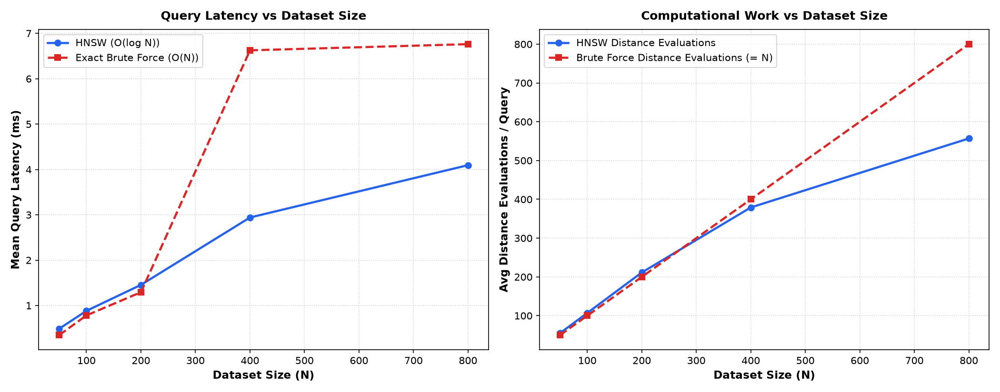
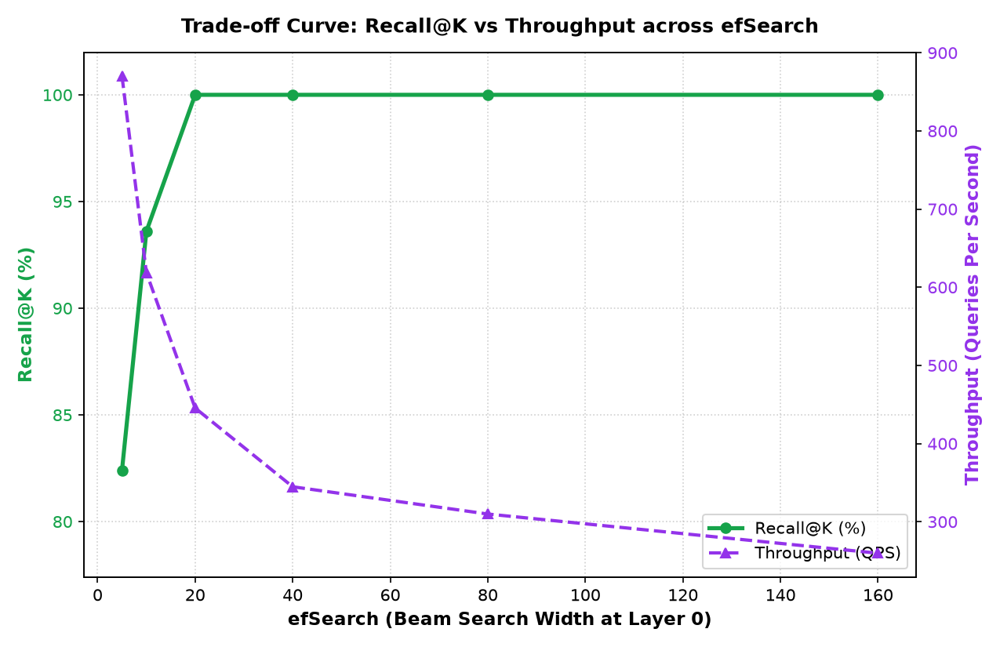
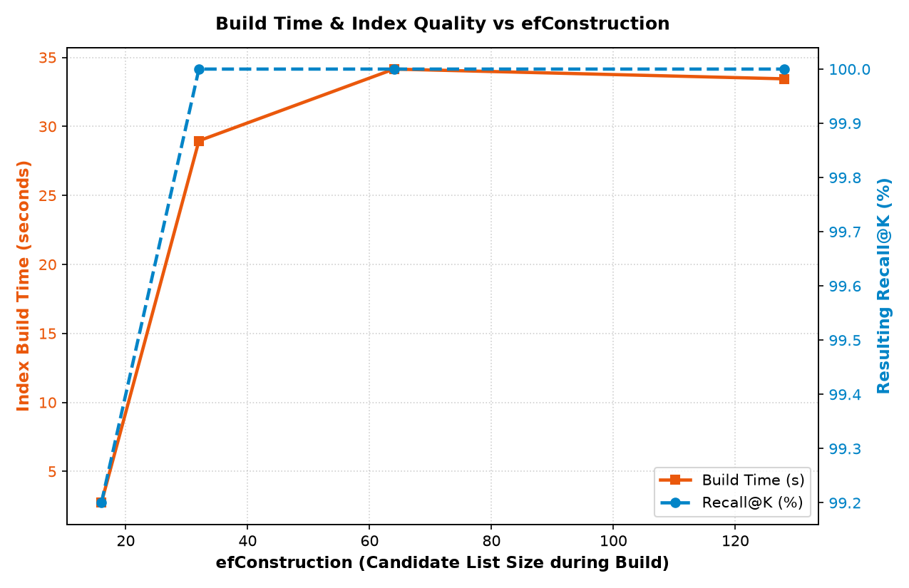

Empirical Performance, Accuracy (Recall@K), and Trade-off Analysis against Exact Baseline
| Experiment | N | M | efC | efS | Recall@K | HNSW Mean | HNSW p95 | HNSW QPS | BF Mean | Speedup | Dist Reduction | Peak RAM |
|---|---|---|---|---|---|---|---|---|---|---|---|---|
| scale_N_50 | 50 | 16 | 64 | 32 | 100.0% | 0.489 ms | 0.696 ms | 2046.4 | 0.348 ms | 0.7x | 0.9x | 0.07 MB |
| scale_N_100 | 100 | 16 | 64 | 32 | 100.0% | 0.882 ms | 1.527 ms | 1133.1 | 0.782 ms | 0.9x | 0.9x | 0.14 MB |
| scale_N_200 | 200 | 16 | 64 | 32 | 100.0% | 1.455 ms | 2.243 ms | 687.1 | 1.294 ms | 0.9x | 0.9x | 0.26 MB |
| scale_N_400 | 400 | 16 | 64 | 32 | 100.0% | 2.941 ms | 4.630 ms | 340.0 | 6.627 ms | 2.3x | 1.1x | 0.54 MB |
| scale_N_800 | 800 | 16 | 64 | 32 | 99.0% | 4.095 ms | 6.118 ms | 244.2 | 6.763 ms | 1.7x | 1.4x | 1.03 MB |
| sweep_efSearch_5 | 400 | 16 | 64 | 5 | 82.4% | 1.149 ms | 1.551 ms | 870.2 | 2.627 ms | 2.3x | 2.3x | 0.54 MB |
| sweep_efSearch_10 | 400 | 16 | 64 | 10 | 93.6% | 1.616 ms | 1.873 ms | 618.7 | 2.527 ms | 1.6x | 1.6x | 0.54 MB |
| sweep_efSearch_20 | 400 | 16 | 64 | 20 | 100.0% | 2.245 ms | 3.054 ms | 445.5 | 2.492 ms | 1.1x | 1.2x | 0.54 MB |
| sweep_efSearch_40 | 400 | 16 | 64 | 40 | 100.0% | 2.901 ms | 3.864 ms | 344.8 | 2.797 ms | 1.0x | 1.0x | 0.54 MB |
| sweep_efSearch_80 | 400 | 16 | 64 | 80 | 100.0% | 3.227 ms | 4.451 ms | 309.9 | 2.575 ms | 0.8x | 1.0x | 0.54 MB |
| sweep_efSearch_160 | 400 | 16 | 64 | 160 | 100.0% | 3.850 ms | 5.653 ms | 259.7 | 2.529 ms | 0.7x | 0.9x | 0.54 MB |
| sweep_efConst_16 | 400 | 16 | 16 | 32 | 99.2% | 2.417 ms | 3.075 ms | 413.8 | 2.660 ms | 1.1x | 1.1x | 0.49 MB |
| sweep_efConst_32 | 400 | 16 | 32 | 32 | 100.0% | 2.705 ms | 4.059 ms | 369.7 | 2.944 ms | 1.1x | 1.1x | 0.53 MB |
| sweep_efConst_64 | 400 | 16 | 64 | 32 | 100.0% | 2.675 ms | 3.976 ms | 373.8 | 2.543 ms | 1.0x | 1.1x | 0.54 MB |
| sweep_efConst_128 | 400 | 16 | 128 | 32 | 100.0% | 2.668 ms | 3.707 ms | 374.8 | 2.464 ms | 0.9x | 1.1x | 0.54 MB |
| sweep_M_4 | 400 | 4 | 64 | 32 | 83.2% | 1.606 ms | 3.150 ms | 622.8 | 2.627 ms | 1.6x | 2.0x | 0.44 MB |
| sweep_M_8 | 400 | 8 | 64 | 32 | 96.0% | 2.166 ms | 3.132 ms | 461.7 | 2.620 ms | 1.2x | 1.3x | 0.49 MB |
| sweep_M_16 | 400 | 16 | 64 | 32 | 100.0% | 2.977 ms | 4.110 ms | 335.9 | 2.641 ms | 0.9x | 1.1x | 0.54 MB |
| sweep_M_24 | 400 | 24 | 64 | 32 | 100.0% | 2.751 ms | 3.456 ms | 363.5 | 2.482 ms | 0.9x | 1.0x | 0.58 MB |
efSearch may miss global optima. Increasing efSearch smoothly improves Recall@K toward 100% while gracefully bounding distance computations compared to exhaustive O(N) brute force.


